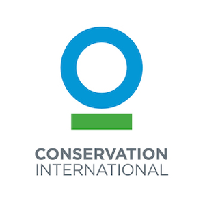

Hands-On: Ocean Fronts Workshop 2024
About this book

Our interest in ocean fronts as climate change biologists began because these are ephemeral ecosystems that are best managed dynamically, offering the potential for management responses that can automatically adapt to climate change.
Ocean fronts are critical sources of productivity and food for a wide range of species across all oceans. This makes their conservation important not just as a response to climate change but as a key feature for many species, including dozens of conservation-concern megafauna.
Building on pioneering work in understanding the biology of ocean front systems, we aimed to explore the conservation implications and potential management strategies for these fronts in the context of climate change. While dynamic protection measures are certainly an intriguing aspect of this work, ocean fronts are deserving of conservation attention due to their importance to megafauna, including key fishery species like tuna. Consequently, a better understanding of ocean fronts can enhance both the conservation of species of concern and improve fisheries outcomes.
Certain areas of the world stand out as ocean front “hotspots”. The Mozambique Channel, the North Atlantic, the southern coast of Argentina, and the vast band of fronts surrounding the Southern Ocean are all regions where these crucial features are most prominent. The users of these ocean fronts include a “Who’s Who” of charismatic megafauna and economically important species, from whales to seabirds, and from tuna to sea turtles.
This eBook has evolved from a series of workshops that matched ocean fronts with megafauna satellite tagging and observational data. It is designed to be useful to individual researchers beyond the workshop setting, and for those with advanced data skills, it serves as a standalone resource that can help assess megafauna use of both thermal and velocity fronts.
We are only scratching the surface—fronts have complex three-dimensional physical and biogeochemical structures that play critical roles in spatial use by megafauna. Our understanding of the dynamics of these subsurface structures and their utilization is still limited. However, mapping megafauna use at the surface, using satellite-derived temperature and velocity indices, is a good starting point.
We hope this eBook serves as an introduction to this fascinating world, inspiring researchers to unlock the full secrets of ocean fronts at depth, and spurring management innovations that can help conserve these unique, ephemeral systems and their critically important residents.